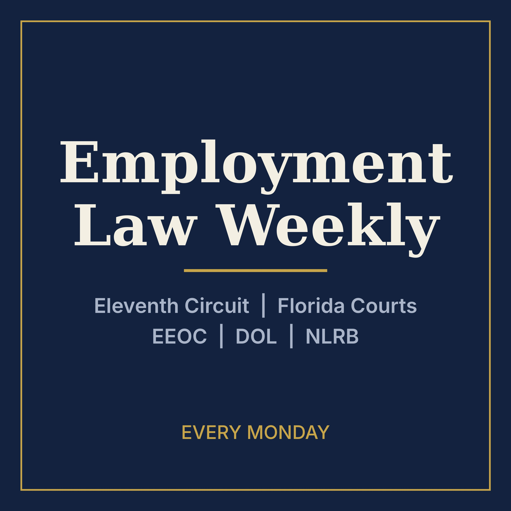

A weekly briefing for employee-side lawyers on new Eleventh Circuit and Florida appellate employment decisions, plus new EEOC, DOL and NLRB guidance. Prepared with AI for private use. Not legal advice. Check every source before relying on it.
Podcast feed: https://law4employees.github.io/podcast/feed.xml
Welcome to Employment Law Weekly. Every Monday: new Eleventh Circuit and Florida appellate employment decisions, plus new EEOC, DOL and NLRB guidance, with links in the show notes.
Prepared with AI for private use. Not legal advice. Check every source before relying on it.